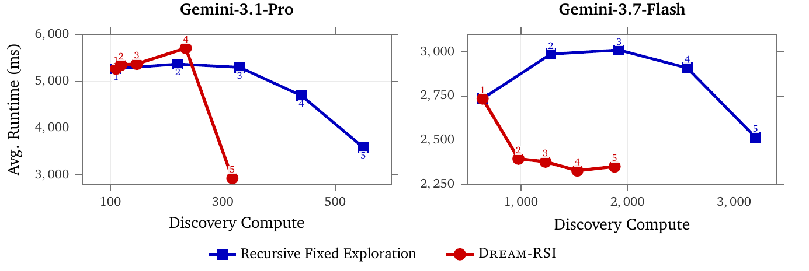
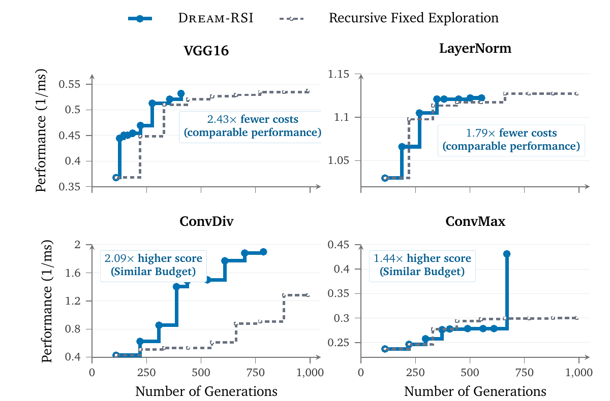

O próximo experimento também é uma decisão.
Executar uma ideia com perfeição não garante que ela mereça ser testada. Na pesquisa com IA, escolher onde insistir, abrir alternativas ou parar pode fazer tanta diferença quanto escrever um bom programa.
Imagine um mapa de tentativas
Cada experimento deixa um caminho e um resultado. Quem pesquisa depois pode percorrer esse mapa, comparar decisões e aproveitar o que já foi medido. A analogia ajuda a entender o método, mas o mapa real é feito de registros estruturados de execuções.
Quem melhora é a estratégia
Uma política de exploração é a regra que decide como distribuir tentativas. No Dream-RSI, essa política é código modificável. O agente de programação e o avaliador permanecem fixos durante a comparação controlada.
Uma volta produz o mapa da próxima.
O processo alterna trabalho real e avaliação sobre registros. As duas fases têm funções diferentes.
Explorar e registrar
A política atual orienta o agente. Programas são criados e avaliados; tentativas, relações e resultados formam uma árvore. Esta fase consome execuções reais.
Transformar o histórico em replay
A árvore vira um ambiente consultável. Uma política pode visitar os ramos em outra ordem e escolher quando interrompê-los, usando os resultados que já existem.
Comparar políticas candidatas
Um agente desenvolve variações do código de exploração. O replay fornece feedback para selecionar uma política com boa relação entre qualidade, trabalho e paralelismo.
Voltar à pesquisa e ampliar o histórico
A política selecionada orienta a rodada seguinte. Novas execuções acrescentam árvores ao conjunto de simuladores. A melhoria da estratégia e a expansão do histórico fecham o ciclo.
Veja o mecanismo nas figuras dos autores.
Imagens baixadas do site original e preservadas, com leitura orientada em português. Clique em uma figura para abrir em tamanho completo.


O que foi medido — e contra quem.
O artigo avalia oito tarefas em três domínios. Não há uma métrica única: tempo de execução, chamadas ao agente e qualidade da solução respondem a perguntas diferentes.
| Política / modelo | Chamadas de descoberta | Tempo médio final (ms) |
|---|---|---|
| Fixa · Gemini-3.1-Pro | 550 | 3.587,1 |
| Dream-RSI · Gemini-3.1-Pro | 317 | 2.931,0 |
| Fixa · Gemini-3.7-Flash | 3.200 | 2.516,7 |
| Dream-RSI · Gemini-3.7-Flash | 1.879 | 2.350,6 |
O tempo médio reúne seis datasets de teste. “Compute” nessa tabela significa número acumulado de chamadas, e não dólares, energia ou tempo total de toda a pesquisa. Os nomes dos modelos foram mantidos como publicados pelos autores. Artigo, seção 4.1 ↗
Compare a mesma base.
Visualização dos números publicados. Não executa IA nem estima uma conta financeira.
Tempo médio final: de 3.587,1 para 2.931,0 ms.
O número de 162× tem contexto
Ele compara 51.200 chamadas do SimpleTES com 317 do Dream-RSI no Lasso. As bases usam modelos diferentes; não é a comparação controlada de mudar apenas a política. Não use esse fator como promessa geral de economia.
Também há resultados sem vitória
Em matemática, Dream-RSI melhora o resultado de soma–diferença e empata em empacotamento de círculos entre os métodos listados. Em autocorrelação, o SimpleTES mantém o melhor valor; Dream-RSI usa um orçamento menor de gerações.


Entender também é saber onde a ideia termina.
O replay não vê o futuro.
Ele responde sobre o espaço já percorrido. Um ramo nunca executado não ganha um resultado confiável só porque existe uma simulação. Por isso, novas rodadas reais continuam necessárias.
Zero novas execuções não significa custo total zero.
O histórico precisou ser produzido. Gerar e revisar políticas, armazenar registros e executar replay também requer recursos. A economia reportada em chamadas de descoberta não mede toda essa conta.
Uma política melhor no histórico pode falhar fora dele.
Incluir a política atual entre as candidatas permite escolher uma que não piore a pontuação naquele replay. Isso não garante o mesmo resultado em novas tarefas. O plano educativo separa árvores de desenvolvimento e teste para tornar esse risco visível.
O agente não pode consultar a resposta antes de decidir.
O apêndice B restringe a política ao prefixo observado: apenas os nós já revelados podem orientar a próxima decisão. Escolher ramos olhando os resultados ocultos seria vazamento de informação e invalidaria a comparação.
“Menos orientação foi melhor” tem um escopo.
A ablação do estudo testa uma forma específica de inserir resumos direcionais de trajetórias nos prompts. Esse mecanismo prejudicou o resultado nas condições avaliadas. Não é evidência de que toda instrução, memória ou orientação seja ruim.
A história da IA é uma analogia, não o dataset deste estudo.
Hinton, GPUs, Transformers, AlphaGo e AlphaFold ajudam a discutir dependências entre descobertas. O Dream-RSI apresentado utiliza árvores registradas nas tarefas de descoberta; não simula toda a história da ciência, nem demonstra redescobrir o futuro com um corte histórico de conhecimento.
Onde o AlphaEvolve entra nessa história.
O AlphaEvolve combina modelos de linguagem e avaliação automática em um processo evolutivo de programas. O Dream-RSI enfatiza como melhorar a política que organiza a exploração. Ambos participam da pesquisa automatizada, mas seus mecanismos e resultados precisam ser apresentados separadamente.
A DeepMind relata que uma heurística descoberta pelo AlphaEvolve para o Borg recupera, em média, 0,7% dos recursos computacionais globais do Google. A fonte não converte esse resultado em “milhões de dólares”; essa estimativa do narrador não será usada como fato.
Uma pergunta para testar sua leitura.
Uma política foi melhor em todas as árvores históricas disponíveis. O que podemos concluir?
Escolha uma resposta para ver a explicação.
Um projeto para aprender a avaliar descobertas.
Proposta: um laboratório educativo em português que começa com leitura visual e evolui para experimentos de decisão. O guia e a atividade acima já estão disponíveis; as etapas abaixo são o plano de expansão.
Vá à fonte. Confira os detalhes.
Referências primárias orientam as afirmações. O vídeo é o ponto de partida editorial; a imagem anexada não é usada como evidência científica.
- Site original do Dream-RSIApresentação do método, demonstração e origem das cinco figuras desta página.
- Zheng et al. — Dream-RSI: Recursive Self-Improvement through Evolving WorldsarXiv:2609.14858v1 · 14 setembro 2026. Método, tabelas, ablações e prompts.
- Repositório dos autoresStatus do código, instruções de citação e plano de disponibilização.
- AlphaEvolve — Google DeepMindFonte do resultado de 0,7% no gerenciamento de recursos computacionais.
- Vídeo: “O Google está de volta...”Origem do resumo fornecido para este projeto; análise feita a partir do texto recebido e da comparação com as fontes primárias.
Figuras: Zheng et al. / Dream-RSI, mantidas sem tradução sobreposta. Créditos e URLs de origem em registro de imagens. Direitos pertencem aos respectivos titulares. Comentários e atividades são conteúdo educativo INEMA.